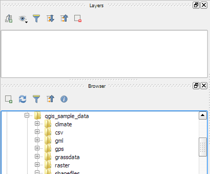
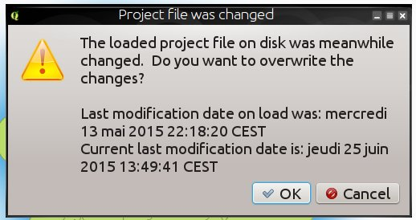
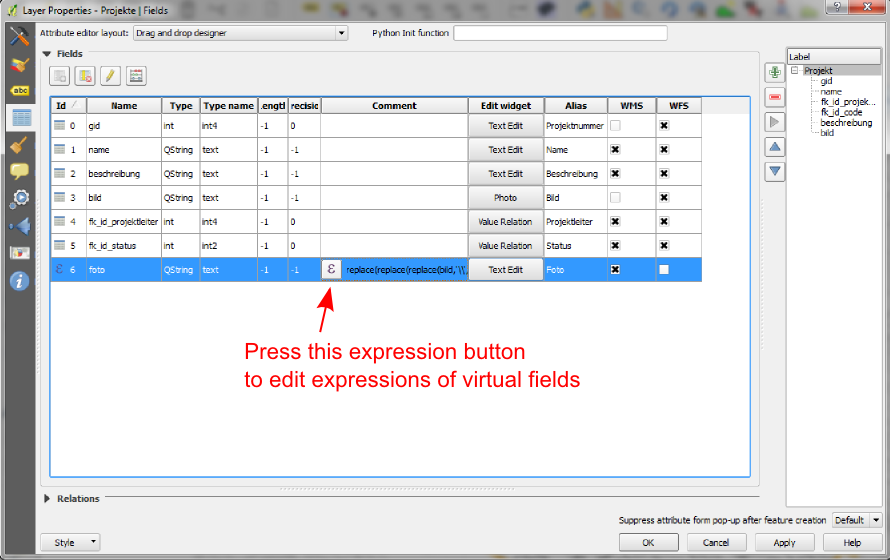

Log met wijzigingen voor QGIS 2.10¶
Dit is het log met wijzigingen voor de volgende uitgave van QGIS - versie 2.10.0 ‘ Pisa’ - gastheer voor de ontmoeting van de ontwikkelaars in maart 2010.
Laatste uitgave
Dit is de volgende uitgave in onze 4-maandelijkse serie voor uitgaven. Het geeft u vroege toegang tot de nieuwe mogelijkheden waaraan we hebben gewerkt en vertegenwoordigt de ‘cutting edge’ van de ontwikkeling van QGIS. Als u werkt in een productieomgeving waar u meer conservatief wilt zijn met betrekking tot het uitrollen van nieuwe mogelijkheden voor uw gebruikers, we verschaffen ook een Lange Termijn Release (LTR) versie van QGIS. De huidige LTR is versie 2.8.2 en is beschikbaar op download.qgis.org. LTR releases zullen worden ondersteund met achterwaartse oplossingen voor problemen gedurende één jaar, en zal zich in een permanente vriesfase bevinden met betrekking tot nieuwe mogelijkheden (d.i. er worden geen nieuwe mogelijkheden toegevoegd, alleen oplossingen voor problemen en triviale bijwerkingen). De in QGIS 2.10 ‘Pisa’ verschafte mogelijkheden zullen worden opgenomen in de volgende LTR-release (gepland voor release in 2016), het gebruiken van deze release verschaft u een excellente mogelijkheid om nieuwe mogelijkheden te testen die uiteindelijk zullen worden opgenomen in de volgende LTR.
Nieuwe mogelijkheden in QGIS 2.10 ‘Pisa’
QGIS 2.10.0 bevat vele nieuwe mogelijkheden, aanpassingen en verbeteringen om de meest populaire gratis desktop GIS nog meer gevuld met mogelijkheden en nuttiger te maken. Wanneer aan software nieuwe mogelijkheden worden toegevoegd introduceren die de mogelijkheid tot het ontstaan van nieuwe problemen - als u in deze uitgave nieuwe problemen tegenkomt, vul dan een ticket in op de QGIS Bug Tracker.
Dankwoord
We willen de ontwikkelaars, schrijvers van documentatie, testers en alle andere vele mensen bedanken die vrijwillig hun tijd en inspanningen bijdragen (of mensen ondersteunen om dat te doen).
From the QGIS community we hope you enjoy this release! If you wish to donate time, money or otherwise get involved in making QGIS more awesome, please wander along to qgis.org and lend a hand!
Tenslotte willen we onze officiële sponsoren bedanken voor de onschatbare financiële ondersteuning die zij aan dit project verlenen:
- GOUDEN sponsor: Asia Air Survey, Japan,
- ZILVEREN sponsor: Sourcepole AG, Switzerland
- ZILVEREN sponsor: Staat Vorarlberg, Oostenrijk
- ZILVEREN sponsor: Office of Public Works, Ierland, Ierland
- ZILVEREN Sponsor: AGH University of Science and Technology, Krakow, Polen
- BRONZEN sponsor: www.molitec.it, Italië
- BRONZEN sponsor: www.argusoft.de, Duitsland
- BRONZEN sponsor: www.openrunner.com, Frankrijk
- BRONZEN sponsor: GKG Kassel,(Dr.-Ing. Claas Leiner), Duitsland
- BRONZEN sponsor: Customer Analytics, USA
- BRONZEN sponsor: Urbsol, Australië
- BRONZEN sponsor: MappingGIS, Spanje
- BRONZEN sponsor: Lutra Consulting, VK
- BRONZEN sponsor: ADLARES GmbH, Duitsland
- BRONZEN sponsor: Avioportolano Italia, Italië
- BRONZEN Sponsor: GeoSynergy, Australië
- BRONZEN Sponsor: Gaia3D, Zuid-Korea
- BRONZEN Sponsor: Royal Borough of Windsor and Maidenhead, VK
- BRONZEN Sponsor: Chartwell Consultants Ltd, Canada
- BRONZEN Sponsor: Trage Wegen vzw, België
- BRONZEN Sponsor: GIS-Support, Polen
- BRONZEN Sponsor: GIS3W, italië
- BRONZEN Sponsor: GFI - Gesellschaft fr Informations technologie mbH, Duitsland
- BRONZEN Sponsor: Faculty of Geology, Geophysics and Environmental Protection, AGH, University of Science and Technology, Polen
A current list of donors who have made financial contributions large and small to the project can be seen on our donors list. If you would like to become and official project sponsor, please visit our sponsorship page for details. Sponsoring QGIS helps us to fund our six monthly developer meetings, maintain project infrastructure and fund bug fixing efforts.
QGIS is gratis software en u bent niet verplicht om maar iets te betalen voor het gebruiken ervan - in feite willen we mensen, wijd en zijd verspreid, aanmoedigen om het te gebruiken ongeacht uw financiële of sociale status - wij geloven dat het uitrusten van mensen met gereedschappen voor het maken van ruimtelijke beslissingen zal resulteren in een betere wereld voor de gehele mensheid.
- Algemeen
- Analyse-gereedschappen
- Browser
- Gegevensproviders
- Gegevensbeheer
- Diagrammen
- Digitaliseren
- Labels
- Printvormgeving
- Programmeerbaarheid
- QGIS Server
- Symbologie
- Mogelijkheid: Categorieën moeten overeenkomen met bestaande stijlen
- Mogelijkheid: Variëren van symboolgrootten met behulp van de renderer Gradueel
- Mogelijkheid: Nieuwe optie voor het voorkomen van het automatisch afsnijden van objecten naar het kaartbereik
- Mogelijkheid: Schalen van grootte en draaien zijn verwijderd uit het menu Geavanceerd
- Mogelijkheid: Datagedefinieerde eigenschappen voor markering lettertype
- Mogelijkheid: Visualiseren en aanpassen van de renderer Gradueel met behulp van een histogram
- Mogelijkheid: Expressies voor grootte, rotatie en lijndikte op niveau van de symboollijst
- Mogelijkheid: Live laageffecten voor lagen en symboollagen
Algemeen¶
Mogelijkheid: Parameters voor join kunnen nu worden bewerkt¶
Het is nu mogelijk om parameters voor joins (zoals een voorvoegsel voor join of kolommen die moeten worden samengevoegd) te bewerken nadat een join is gemaakt. Voorafgaand aan deze wijziging moest men de gehele join verwijderen en opnieuw maken.

Mogelijkheid: Lagen met joins kunnen nu worden gefilterd¶
Voorafgaand aan versie 2.10 kon een laag niet worden gefilterd als die tenminste één join had. Nu is die nog steeds te filteren, maar alleen met behulp van de kolommen van de originele hoofdtabel.

Mogelijkheid: Algemene verbeteringen¶
Naast de vele hieronder vermelde items zijn de volgende verbeteringen aangebracht:
- Ondersteuning voor lagen van Pointcloud in PostGIS
- Verbeterde balken voor pictogrammen en pictogrammen in vast te zetten vensters om minder schermruimte in te nemen en voor verbeterd uiterlijk op OSX
- Verbeteringen aan de plug-in / provider voor GRASS
- Ondersteuning voor niet-Latijnse scripts voor gebogen labels
- Enorm verbeterde en meer robuuste gereedschappen voor rasterberekeningen en geoverwijzingen
- Verbeterde UI en werkstroom voor het venster van de eigenschappen voor gegevensgedefinieerde labels

Mogelijkheid: Verbeterde afhandeling van potentiële overschrijvingen van projectbestanden¶
QGIS 2.10 zal u nu waarschuwen wanneer u een project probeert op te slaan als de laatste datum van aanpassingen van een geladen project is gewijzigd. Dit is nuttig als meer dan één gebruiker of sessie hetzelfde project hebben geopend en beide proberen wijzigingen op te slaan in het projectbestand.
Deze mogelijkheid werd ontwikkeld door: Jürgen Fischer (norBIT)

Mogelijkheid: Nieuwe aandrijving voor geometrie¶
QGIS 2.10 heeft een nieuwe aandrijving voor geometrie. Over het algemeen zult u nog niet veel verschillen zien in de gebruikersinterface, maar dit legt de fundering voor een veel uitgebreidere set van georuimtelijke mogelijkheden die we in de toekomst zullen kunnen ondersteunen. De nieuwe implementatie ondersteunt typen gebogen geometrieën (u kunt dus bijvorbeeld een rotonde voor verkeer weergeven als een cirkel in plaats van een gesegmenteerde polygoon die is gemaakt om er uit te zien als een cirkel) en heeft ondersteuning aan de achterzijde voor waarden Z/M in geometrieën. U zult PostGIS of een soortgelijke gegevensopslag dienen te gebruiken die in staat is gebogen lineaire geometrieën weer te geven om bogen in QGIS te gebruiken. Als u er eens mee wilt spelen kunt u een eenvoudige oefening zoals deze proberen in uw database van PostGIS:
-- Table: curves DROP TABLE curves;
CREATE TABLE curves (
id bigserial NOT NULL,
geometry geometry(CURVEPOLYGON, 4326),
name text,
CONSTRAINT p_key PRIMARY KEY (id)
);
INSERT INTO curves VALUES ( 1, st_geomfromtext(
'CURVEPOLYGON(CIRCULARSTRING(1 1,1 2, 2 2, 2 1, 1 1))', 4326), 'test');
Voeg dan de laag curves toe aan uw project.
Deze mogelijkheid werd ontwikkeld door: Marco Hugentobler (Sourcepole AG)
Dit werd mogelijk gemaakt door: KantonSolothurn, Switzerland

Analyse-gereedschappen¶
Mogelijkheid: Nieuw vast te zetten widget voor statistisch overzicht¶
Kan een overzicht van statistieken weergeven (bijv. gemiddelde, standaard afwijking, …) voor een veld of expressie uit een vectorlaag of selectie. Dit wordt mogelijk gemaakt door middel van een nieuw vast te zetten paneel dat u kunt activeren in het menu Weergave -> Panelen -> Statistieken. Onthoud dat u alleen statistieken kunt genereren in vectorlagen die een numerieke kolom hebben.

Mogelijkheid: Logaritmische functies in de rasterberekeningen gebruiken¶
De rasterberekeningen (Raster -> Rasterberekeningen in het menu van QGIS) is een gereedschap dat u in staat stelt om matrixbewerkingen uit te voeren op één of meer rasterlagen. Met QGIS 2.10 kunt u nu de functies LN en LOG10 in de rasterberekeningen gebruiken.

Mogelijkheid: Nieuwe mogelijkheden gebiedsstatistieken¶
Gebiedsstatistieken verschaffen een manier om geaggregeerde waarden voor de pixels die onder een polygoon liggen uit te nemen. De volgende nieuwe mogelijkheden zijn toegevoegd aan ons gereedschap voor gebiedsstatistieken:
- u kunt nu selecteren welke statistieken moeten worden berekend
- extra statistieken zijn toegevoegd (mediaan, standaard afwijking, minimum, maximum, bereik, kleinste hoeveelheid, grootste hoeveelheid en variëteit)
- mogelijkheid om de rasterband te selecteren die moet worden gebruikt voor het uitnemen van de statistieken
Onthoud dat gebiedsstatistieken een ‘bron plug-in’ is (een plug-in die is ingebouwd in uw installatie van QGIS), maar standaard is uitgeschakeld. U dient hem in te schakelen in Plug-ins beheren en installeren en dan zal een menuitem voor gebiedsstatistieken verschijnen in het menu Raster.
Browser¶
Mogelijkheid: Nieuw widget voor eigenschappen van de browser¶
Bij het gebruiken van de vast te zetten panelen voor de QGIS Browser (Weergave -> Panelen -> Browser), kunt u nu een widget voor eigenschappen inschakelen aan de onderzijde van de boom van het bestandssysteem. Elke gegevensbron waar u op klikt zal zijn eigenschappen laten zien in dat paneel. Dit zorgt voor het snel en handig bekijken van de basisinformatie over de gegevensset die u heeft geselecteerd. U zou het blauwe pictogram i aan de bovenzijde van het paneel van de browser moeten gebruiken om de weergave van eigenschappen in-/uit te schakelen.

Mogelijkheid: Nieuw pictogram voor browser¶
De QGIS Browser is een afzonderlijk, zelfstandige toepassing die u in staat stelt de voor u beschikbare GIS-gegevenssets te bekijken en er doorheen te bladeren (van uw bestandssysteem, databaseverbindingen, verbindingen naar webservices etc.) In eerdere uitgaven van QGIS gebruikten we een erg soortgelijk pictogram als dat van de toepassing QGIS zelf wat een bron van verwarring is geweest voor vele gebruikers. We hebben een nieuw pictogram voor QGIS Browser gemaakt om de kans op het openen van de verkeerde toepassing te verkleinen.

Gegevensproviders¶
Mogelijkheid: Verbeteringen aan DXF exporteren¶
Het exporteren van DXF werd doorlopend verbeterd in de laatste drie versies van QGIS. Deze versie introduceert een verbeterde SVG of eenvoudige markering voor DXF blokconversie, repareert een aantal problemen die resulteerden in incomplete (onleesbare) DXF-bestanden. In de schermafdruk kunt u links de originele weergave in QGIS zien en rechts de rendering van het geëxporteerde DXF-bestand in Autodesk TrueView.
Bekijk ook dit artikel op qgis.ch dat verklaart wat wel wordt ondersteund en wat niet.
Deze mogelijkheid werd ontwikkeld door: Jürgen Fischer (norBIT)
Dit werd mogelijk gemaakt door: Gemeenschappen van Morges, Uster, Vevey en SIGE

Mogelijkheid: Expressie-filters aan de kant van de provider voor PostGIS¶
In QGIS 2.10 kunt u nu objecten filteren aan de kant van de databaseserver. Alleen ondersteunde expressies zullen naar de database worden gezonden. Expressies die niet ondersteunde operatoren of functies gebruiken zullen ongemerkt terugvallen naar lokale evaluatie.
U dient deze mogelijkheid in te schakelen in Extra -> Opties -> databronnen om hem te kunnen gebruiken. Als uw filterexpressie te gebruiken is in PostgreSQL zal hij automatisch worden uitgevoerd aan de zijde van de server. U kunt ook gebruik maken van deze mogelijkheid bij het gebruiken van de Python API, bijvoorbeeld bij het gebruiken van deze aanroepen.
QgsFeatureRequest().setFilterExpression( expressie )
of
QgsVectorLayer::getFeatures( expressie )

Gegevensbeheer¶
Mogelijkheid: Virtuele velden kunnen nu bijgewerkt worden¶
Voorafgaand aan versie 2.8 diende u virtuele velden te verwijderen en opnieuw te maken als u de expressie voor het berekenen van het virtuele veld wilde wijzigen. In 2.10 kunt u nu naar de tab Velden gaan en drukken op de kleine knop Expressie om de expressiebewerker te openen en de voor het virtuele veld gebruikte expressie bijwerken.
Deze mogelijkheid werd ontwikkeld door: Matthias Kuhn (OpenGIS)
Dit werd mogelijk gemaakt door: City of Uster, Switzerland

Mogelijkheid: Automatisch aanvullen in Wijzig hulpmiddel voor widget Waarde relatie bewerken¶
Het widget Waarde relatie bewerken voor vectorlagen (Laag -> Eigenschappen -> Velden -> Tekst bewerken -> Waarde relatie) kan nu worden ingesteld op automatisch aanvullen wanneer u begint t typen in het invoervak dat het maakt op het objectformulier.

Mogelijkheid: Verbeteringen aan DB Manager¶
Er zijn twee nieuwe mogelijkheden in de DB Manager :
Query als laag geen unieke kolom integer meer nodig heeft
Een kolom met een unieke kolom integer is niet meer nodig om een query van SQL te laden als een laag voor QGIS. Een automatisch verhoogde waarde zal in plaats daarvan worden gebruikt.
Integratie van een SQL querybouwer
Een nieuw venster in DB Manager helpt bij het maken van query’s voor SQL door middel van widgets waar namen van tabellen, kolommen en functies kunnen worden geselecteerd door de gebruiker. Dit is geporteerd vanuit de plug-in QSpatialite en werkt voor de providers PostGIS en Spatialite.
Dit werd mogelijk gemaakt door: MEDDE (French Ministry of Sustainable Development)
Deze mogelijkheden werden ontwikkeld door: Hugo Mercier / Oslandia

Mogelijkheid: Keten van filters voor widget Relatieverwijzing¶
Men kan de widgets voor relatieverwijzing gebruiken om gekoppelde items uit andere tabellen te selecteren. men kan ofwel grafisch elementen selecteren door ze in de kaart te selecteren, als aan het gekoppelde object een geometrie is verbonden of een element kiezen door middle van de gekoppelde ID. Faciliteren van de niet-ruimtelijke selectie is nu mogelijk door het aantal beschikbare opties te verkleinen met filters (geketend of niet). Als de filters niet geketend zijn worden hun keuzes gecombineerd met “AND” om de beschikbare opties te definiëren. Als geketend is geselecteerd wordt een modus Opzoeken voor de filters geactiveerd zodat elk filter alleen de items weergeeft die overeenkomen met het eerdere filter. Dit is handig bij het selecteren van hiërarchische gegevens zoals Stad -> Straat -> Nummer.
Deze mogelijkheid werd ontwikkeld door: Matthias Kuhn (OpenGIS)
Dit werd mogelijk gemaakt door: SIGE
Diagrammen¶
Mogelijkheid: Verbeteringen aan Diagrammen¶
De functionaliteit Diagram in QGIS maakt het u mogelijk om kleine taartdiagrammen of histogrammen over objecten op de kaart te leggen. In deze uitgave hebben we have de volgende verbeteringen voor ondersteuning van diagrammen gemaakt:
- Diagrammen kunnen worden uitgeschakeld zonder verlies van instellingen
- Keuzevak om diagrammen altijd weer te geven voor een laag toegevoegd
- De gebruikersinterface voor diagrammen is vernieuwd om het dialoogvenster te vereenvoudigen en het meer gebruikersvriendelijk te maken
- Klassen voor diagrammen worden nu weergegeven in de legenda van de laag
Digitaliseren¶
Mogelijkheid: Verbeterd gereedschao voor draiien van geometrie¶
Het gereedschap voor het draaien van een geometrie is een geavanceerd gereedschap voor digitaliseren dat u in staat stelt de geometrie van een object onafhankelijk te draaien. De volgende verbeteringen zijn aan het gereedschap om te draaien gemaakt:
- u kunt nu numerieke invoer in het gereedschap om te draaien gebruiken
- u kunt een combinatievak gebruiken om de hoeken in te stellen
- ondersteuning voor snappen aan hoeken toegevoegd (direct ingeschakeld bij
gebruiken vanshift + click``) - het anker voor de draaiing wordt gedefinieerd met
CTRL+clicken niet bij het verplaatsen van de muis

Labels¶
Mogelijkheid: Uitlijning “Punt volgen” voor labels met meerdere regels¶
Indien ingesteld op deze modus, is de uitlijning van de tekst van labels afhankelijk van de uiteindelijke plaatsing van het label, relatief ten opzichte van het punt. Bijv, als het label links va het punt wordt geplaatst zal het label rechts worden uitgelijnd, en als het rechts van het punt wordt geplaatst dan zal het label links worden uitgelijnd. Dit verbetert de weergave van labels met meerdere regels voor puntlagen enorm.

Printvormgeving¶
Mogelijkheid: Modus voor schalen van schaalbalk toegevoegd om een gewenste breedte van de schaalbalk passend te maken¶
In eerdere versies van QGIS was het moeilijk om grafische schaalbalken te gebruiken als het bereik van de potentiële schalen te groot was. De schaalbalk zou ofwel snel te breed of te smal zijn en men moest handmatig de segmentgrootten (eenheden per segment) aanpassen na elke wijziging in de schaal. Het betekende ook dat schaalbalken niet echt gebruikt konden worden bij het in serie afdrukken van een Atlas of met QGISserver indien de uiteindelijk schaal onbekend was. Met QGIS2.10 kan men nu min/max grootten voor een segmentlengte in mm instellen en QGIS zal automatisch de eenheden per segment aanpassen met behoud van ronde waarden.
Vergeet ook niet om de uitlijning van de schaalbalk in te stellen, speciaal als u wilt dat die wordt gecentreerd of rechts uitgelijnd!
Deze mogelijkheid werd ontwikkeld door: Sandro Mani (Sourcepole AG)
Dit werd mogelijk gemaakt door: Kanton Glarus, Switzerland

Programmeerbaarheid¶
Mogelijkheid: Verbeteringen voor programmeurs¶
We hebben een aantal wijzigingen en verbeteringen gemaakt die interessant zullen zijn voor ontwikkelaars:
- We hebben de minimale vereiste voor Qt4 verhoogd naar versie 4.8. Qt4 is een van de belangrijkste C++ gereedschappen / bibliotheken die we gebruiken om QGIS te maken.
- Nieuwe klasse
QgsStatisticalSummaryvoor het berekenen van statistieken uit een lijst met getallen. - Wijzigen van de gegevensbron voor een vectorlaag mogelijk gemaakt.
- Impliciet delen van de klassen :
QgsField,QgsFields,QgsDataDefined,QgsFeature,QgsGeometry. - Plug-ins kunnen nu hun eigen items maken in het widget Browser met twee nieuwe klassen :
QgsDataItemProviderenQgsDataItemProviderRegistry.

QGIS Server¶
Mogelijkheid: Ondersteuning voor tolerantie-parameter in WMS GetFeatureInfo verzoeken¶
Bij het gebruiken van WMS-lagen, geleverd door QGIS Server, kunt u nu de tolerantie specificeren voor hoe ver van de klik-origine verzoeken GetFeatureInfo in aanmerking zouden moeten komen. Dit is belangrijk voor mobiele apparaten waar het moeilijker is om de objecten precies aan te duiden. Vóór deze nieuwe mogelijkheid was het nagenoeg onmogelijk om punt- of lijnobjecten te identificeren op een mobiel apparaat met QGISserver. U kunt de volgende parameters toevoegen aan uw verzoeken GetFeatureInfo:
FI_POINT_TOLERANCE=16&FI_LINE_TOLERANCE=8&FI_POLYGON_TOLERANCE=4
en wijzig de waarden voor tolerantie (in pixels) om aan uw behoeften te voldoen.
Deze mogelijkheid werd ontwikkeld door: Marco Hugentobler (Sourcepole AG)
Dit werd mogelijk gemaakt door: City of Uster, Switzerland

Symbologie¶
Mogelijkheid: Categorieën moeten overeenkomen met bestaande stijlen¶
Opties onder menu Categorieën van de renderer toegevoegd om categorieën in te stellen op symbolen met een overeenkomende naam uit de stijlbibliotheek of een XML-stijlbestand.

Mogelijkheid: Variëren van symboolgrootten met behulp van de renderer Gradueel¶
Renderers zijn het subsysteem van QGIS dat u in staat stelt rijke cartografische weergaven van uw gegevens te maken. Een renderer Gradueel varieert de symbologie, gebaseerd op een doorlopend wijzigende waarde in een vectorlaag. In eerdere versies van QGIS kon u alleen de kleur laten variëren (bijv. door een kleur van een kleurenbalk te gebruiken). In QGIS 2.10 stelt de symboolrenderer Gradueel u nu in staat om de grootte of de kleur te variëren. Voor puntlagen kunt u de grootte van de punt variëren, voor lijnen kunt u de breedte van de lijn variëren. Polygoonlagen behouden slechts de mogelijkheid om te variëren op kleur, lijndikte wordt nog niet ondersteund.
Deze mogelijkheid werd ontwikkeld door: Vincent Mora (Oslandia)
Dit werd mogelijk gemaakt door: Agence de l’eau Adour-Garonne

Mogelijkheid: Nieuwe optie voor het voorkomen van het automatisch afsnijden van objecten naar het kaartbereik¶
Deze optie (geplaatst onder het menu Geavanceerd van symbolen) schakelt het automatisch afsnijden van lijnen/polygonen naar het kaartbereik uit. In sommige gevallen resulteert dit afsnijden in niet gewenste symbologie (bijv. zwaartepuntvullingen waarbij het zwaartepunt altijd het actuele zwaartepunt van het object moet zijn).

Mogelijkheid: Schalen van grootte en draaien zijn verwijderd uit het menu Geavanceerd¶
We hebben Grootte schalen en Draaien verwijderd uit `Laag -> Eigenschappen -> tab Symbologie -> menu Geavanceerd. U zou in plaats daarvan draaien moetn instellen op een per-symbool laag basis met behulp van een expressie of veld. De gebruikte expressies in oude projecten worden geconverteerd naar eigenschappen datagedefinieerde grootte en hoek op symboolniveau.
Deze mogelijkheid werd ontwikkeld door: Vincent Mora (Oslandia)
Dit werd mogelijk gemaakt door: Agence de l’eau Adour-Garonne

Mogelijkheid: Datagedefinieerde eigenschappen voor markering lettertype¶
De meeste eigenschappen van de markering voor lettertype kunnen nu datagedefinieerd zijn, inclusief grootte, rotatie en teken van de markering.

Mogelijkheid: Visualiseren en aanpassen van de renderer Gradueel met behulp van een histogram¶
Een nieuwe tab Histogram is toegevoegd aan de renderer Graduaeel, die een interactief histogram van de waarden uit het toegewezen veld of expressie weergeeft. Klasse-afbrekingen kunnen met behulp van het histogram worden verplaatst of toegevoegd.
Dit werd mogelijk gemaakt door: ADUGA
Deze mogelijkheid werd ontwikkeld door: Nyall Dawson

Mogelijkheid: Expressies voor grootte, rotatie en lijndikte op niveau van de symboollijst¶
Grootte en Rotatie kunnen door middle van een expressie worden gedefinieerd voor alle symboolniveaus die een markering samenstellen. Dikte kan worden gedefinieerd door een expressie voor alle symbolen die ene lijn samenstellen.
Voor symbolen wordt een legenda gegenereerd voor variërende grootten. Dit maakt een multivariate analyse van de legenda in het geval van geclassificeerde/graduele kleuren mogelijk.
Een assistent, met voorbeeld, is toegankelijk via de knop Datagedefinieerd om de gebruiker te helpen de expressie voor de grootte te definiëren. Drie methoden zijn beschikbaar: Flannery, Area en Radius.
Deze mogelijkheid werd ontwikkeld door: Vincent Mora (Oslandia)
Dit werd mogelijk gemaakt door: Agence de l’eau Adour-Garonne

Mogelijkheid: Live laageffecten voor lagen en symboollagen¶
Live lageneffecten zijn toegevoegd aan de reeds ruime cartografische mogelijkheden van QGIS door het toevoegen van de mogelijkheid om verscheidene effecten voor renderen toe te voegen aan de keten van renderen. Met live-effecten kunt u dingen doen als het plaatsen van valschaduwen onder uw symbool, schuin trekken en vervormen van het gerenderde symbool. U kunt deze effecten ook in lagen op elkaar leggen en instellen of het effect progressief zou moeten zijn (d.i. zichzelf toepassen op de gerenderde status tot nu toe) of discreet (door het opnieuw injecteren van de bron-geometrie terug in de keten van renderen).
Opmerking: Deze mogelijkheid is voor gevorderde gebruikers en we moeten opmerken dat het overmatig gebruiken van deze mogelijkheid de benodigde tijd voor renderen significant kan verlagen, overweeg dus om verschillende profielen voor symbologie voor uw laag te gebruiken - één voor het genereren van kaarten in productiekwaliteit en één voor de ontwerpmodus.
Deze mogelijkheid werd ontwikkeld door: Nyall Dawson
Deze mogelijkheid werd financieel mogelijk gemaakt door: een initiatief voor crowd-funding